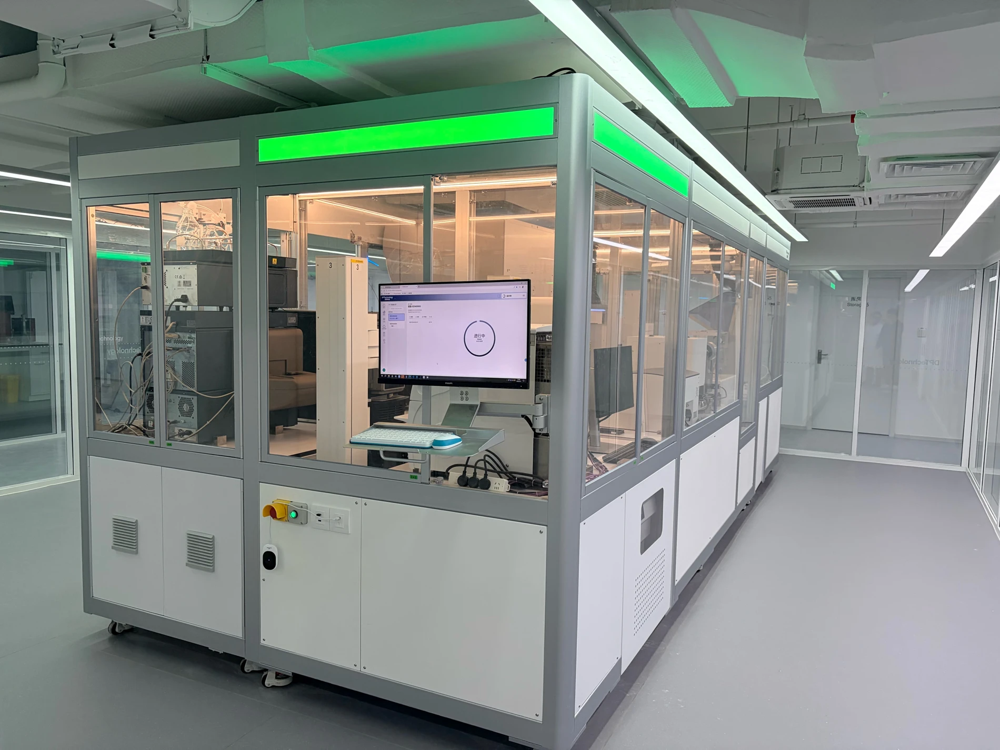
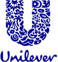

使命
创造AI科学家，
让AI自主进行科学发现
深势希望，AI 能和科学家一起探索尚无答案的问题。为此，AI 需要能够提出假设，设计计算或实验加以检验，并在证据与预想不符时修正判断。

加速科学发现，释放科学价值
AI for Science, Science for Everyone
深势科技（DP Technology）是全球AI for Science（AI4S）领域的开拓者。公司成立于2018年，致力于加速科学发现，释放科学价值，以科学智能体为核心，推进 AI 科学家的研发与应用，构建“读、算、做、智”的技术能力闭环，持续建设开放、平台化的AI原生科学基础设施。
深势通过玻尔科学空间、AI基础设施和自主实验室，为科研人员和企业提供科学智能产品与服务。玻尔科学空间为科研人员提供与AI科学家协作的工作平台，支持知识调研、研究规划和专业科研任务执行；科学原生、训推一体的AI基础设施连接科学数据、模型、工具与算力，支撑科学模型与科研智能体的开发、评测和运行；自主实验室连接实验设计、自动化执行与结果分析，以实验验证和反馈推进下一轮研究。
面向机构研发需求，深势通过智能研发共建，将科学智能与客户自身的科学资产和研发流程结合，建设可持续使用的专属智能研发能力；通过分子与材料发现服务，围绕明确的研发目标，按需组织计算设计、合成或制备、实验测试等研发环节，开展迭代优化，支持新分子、新材料与新工艺等的研发。
目前，玻尔科学空间已服务全球数百万用户，用户来自全国近七成“双一流”高校。深势的产品与服务已应用于生命科学、材料、能源、日化等领域，已服务近200家企业，客户包括联合利华、宁德时代、比亚迪、吉利汽车等《财富》世界500强企业及旗下企业，以及国药集团、东阳光药、翰森制药等医药企业。
深势持续开展科学建模、科学计算与人工智能领域的原创研究，形成DPA原子模型、Uni-Mol分子模型等代表性成果，为科学智能体和研发应用提供专业模型、算法与工具。团队与合作方的多项研究发表于《Nature》主刊，并在2020年获得全球高性能计算领域最高奖项“戈登·贝尔奖”。作为国家高新技术企业、国家专精特新“小巨人”企业，深势拥有跨学科科研与工程团队，博士及博士后占公司成员的比例近30%。
深势相信，科学进步需要好奇心、独立判断与开放协作。公司积极支持开源社区、科研教育与科学挑战赛，提供工具、资源与交流机会，尊重原创贡献，支持更多人把科学想法付诸实践。

联合利华创造AI科学家，
让AI自主进行科学发现
深势希望，AI 能和科学家一起探索尚无答案的问题。为此，AI 需要能够提出假设，设计计算或实验加以检验，并在证据与预想不符时修正判断。
做一家源自中国，
引领世界的AI for Science企业
我们希望，源自中国的原创方法和工具能成为世界各地科学家开展新研究的起点。一个科研平台的价值，也体现在其他人借助它作出了哪些发现。

深势的原创研究起步于原子与分子尺度的科学计算。早期研究团队将深度势能方法开发为开源软件 DeePMD-kit，让更多实验室能够用自己的材料体系开展高精度模拟。2020 年，深势联合创始人参与的跨机构团队将模拟规模拓展至超过一亿个铜原子，获得当年 ACM 戈登·贝尔奖。
深势相信，科学进步需要好奇心、独立判断与开放协作。我们与高校、科研机构和开源社区共同开发科学模型与软件，通过开放代码、共享研究数据，让不同领域的研究者能够复现结果、检验方法，并将它们用于各自关心的问题。一个方法在新的研究中遇到的局限，也常常成为下一项原创研究的起点。
2018 — 2026.11
2018 年 11 月 29 日，深势科技成立，最初的目标是建设微尺度工业研发平台。从模拟原子的运动，到让科学智能体调用软件和实验仪器，深势对科研工具的探索延续至今。
| 地点 | 地址 | 邮编 |
|---|---|---|
| 北京 · 中关村 | 北京市海淀区中关村大街3号鼎好大厦A座12层 | 100089 |
| 北京 · 西三旗 | 北京市海淀区西三旗街道建材城东路8号 | 100192 |
| 上海 | 上海市徐汇区桂林路406号华鑫中心5号楼 | 200030 |
| 深圳 | 深圳市南山区高新南九道45号西北工业大学三航科技大厦409室 | 518057 |
| 宜宾 | 四川省宜宾市大数据产业园C座 | 644005 |
| 美国 · 泽西市 | Atombeat Inc., 525 Washington Boulevard, Floor 3, Jersey City, NJ | 07310 |